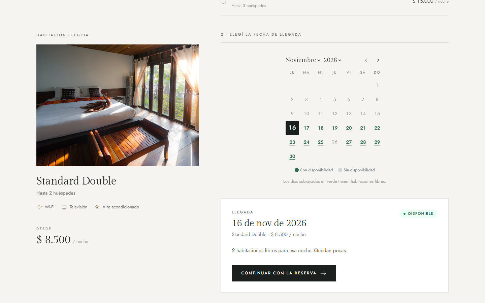
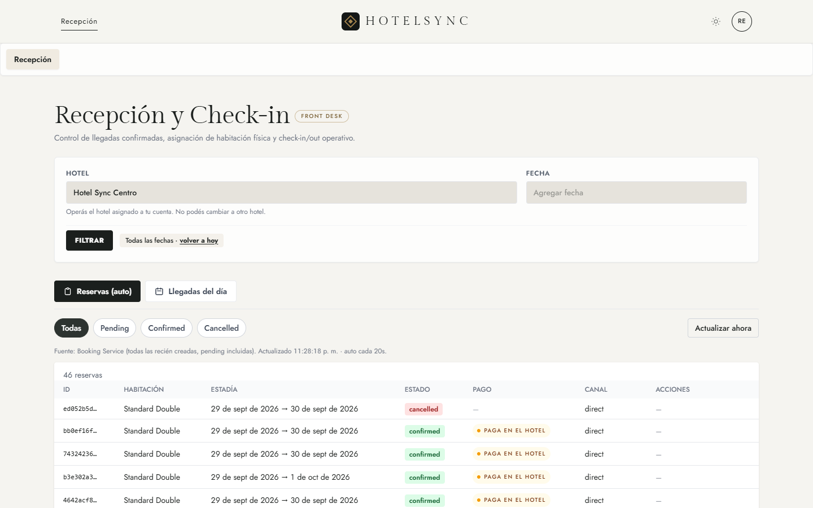
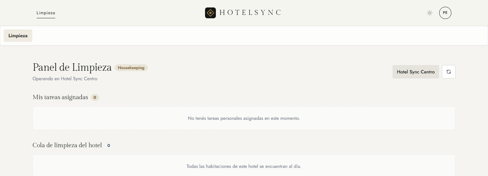
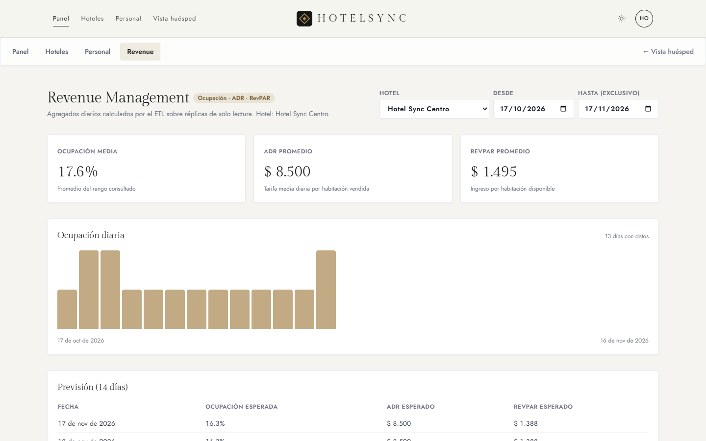

JD
Juan Diego Díaz
Arquitectura
Universidad Cooperativa de Colombia · Arquitectura de Plataformas Tecnológicas
Once microservicios, once bases de datos y un catálogo de eventos para sostener el ciclo completo de una reserva: buscar, reservar, pagar, llegar, salir y facturar.
Arquitectura
DevOps y calidad
Backend
Frontend
Momento 1 de 5 — El punto de partida
Lo que hoy duele
Dos canales venden la misma habitación y la sobreventa se descubre en el mostrador.
Llegadas, folios y facturas sin trazabilidad; nadie sabe quién cambió qué.
Las tareas se dan de viva voz; la habitación sucia aparece cuando el huésped ya llegó.
Ocupación, ADR y RevPAR se calculan al cierre de mes, cuando ya no se puede reaccionar.
Quién lo vive
Quiere ver disponibilidad real y reservar sin llamar ni esperar respuesta por correo.
Necesita la lista de llegadas confirmadas y un check-in que no se pueda duplicar.
Requiere una cola por hotel, priorizada por salida, sin tareas de otros hoteles.
Quiere ocupación, ADR y RevPAR del día, no un consolidado del mes anterior.
Un solo sistema debe responder a los cuatro roles sin compartir una única base: cada uno mira datos de distinto dueño.
Momento 1 de 5 — Vista de capas
Next.js con App Router: sitio público, /admin por rol y simulador de canal. Las cookies son HttpOnly; el navegador nunca ve el token de acceso.
BFF propio en /api/* y un api-gateway sin estado que enruta por once prefijos, aplica límites y regenera el identificador de petición.
Once servicios Express + TypeScript con el flujo route → controller → service. Zod valida en el borde y los errores salen como { error }.
Una base PostgreSQL por servicio, RabbitMQ para lo que puede esperar, Redis para caché de tarifas y réplicas de lectura para analytics.
La regla que ordena todo: un servicio escribe solo su base. Lo que otro necesita llega por HTTP interno o por evento, nunca por un join.
Clientes
api-gateway · 11 prefijos
/property
/rate
/users
/booking
/front-desk
/housekeeping
/billing
/payments
/loyalty
/channel
/analytics
Dominio · 11 servicios
Datos
Momento 1 de 5 — Qué resuelve y qué no
Cuatro objetivos
Buscar, reservar, pagar, llegar, salir y facturar dentro de un mismo sistema y con la misma identidad.
Una base por servicio, sin joins ni claves foráneas cruzadas; el contrato vive en el borde.
Outbox, reintentos acotados y cola de descarte: el check-out no se cae porque falle la factura.
Once servicios en free tier, con datos reales y una demo pública que se pueda mostrar en vivo.
Dentro
Fuera
Momento 2 de 5 — Once servicios, once dueños de dato
Hoteles, habitaciones físicas y tipos.
/api/property 5 modelos · publica 1Inventario, tarifas y disponibilidad; el árbitro del stock.
/api/rate 6 modelos · publica 2Identidad, roles, sesiones y personal del hotel.
/api/users 5 modelosEl ciclo de la reserva y su outbox transaccional.
/api/booking 3 modelos · publica 4Llegadas, check-in y check-out sin duplicados.
/api/front-desk 4 modelos · publica 2Cola de limpieza por hotel y prioridad por salida.
/api/housekeeping 2 modelos · consume 1Folios, cargos y factura al cerrar la estadía.
/api/billing 4 modelos · publica 1Canales OTA, reservas externas y snapshots.
/api/channel 4 modelos · consume 5Puntos, niveles y reversos idempotentes.
/api/loyalty 3 modelos · consume 3Pasarela simulada, transacciones y reembolsos.
/api/payments 2 modelos · publica 2ETL diario idempotente y tablero de revenue.
/api/analytics 3 modelos · publica 141 modelos, 13 eventos y 9 colas en un solo exchange.
hotelsync.events 7 publican · 8 consumenMomento 2 de 5 — El borde de la aplicación
Rutas del BFF
/api/propertyproperty/api/raterate-availability/api/usersuser/api/bookingbooking/api/front-deskfront-desk/api/housekeepinghousekeeping/api/billingbilling/api/channelchannel-manager/api/loyaltyloyalty/api/paymentspayment/api/analyticsanalytics/api/auth/*rutas propias del BFFQué agrega el BFF
El middleware inyecta el Bearer desde la cookie y añade x-gateway-secret y x-client-ip; el navegador nunca habla con el gateway.
Sesión y preferencias
| Cookie | Contenido | Vida |
|---|---|---|
hs_access |
JWT de acceso, HttpOnly y SameSite Lax | 15 min |
hs_refresh |
Token de refresco con rotación | 7 días o sesión |
hs_remember |
Si el usuario pidió recordar la sesión | 7 días |
theme |
Preferencia de tema; no es credencial | persistente |
El refresco es single-flight en /api/auth/refresh: varias peticiones simultáneas comparten una sola renovación.
Reglas de sesión
Rutas por rol
Momento 2 de 5 — Borde, token y datos
Gateway
/health y /metrics exentos.413 al excederlo.414 sin reenviar.requestTimeout; headers 20 s y keep-alive 5 s.x-request-id regenerado y secretos internos descartados.assertProductionSecrets() corta el arranque si falta un secreto fuerte: sin METRICS_TOKEN o x-gateway-secret el servicio no levanta.
Servicios y credenciales
429.DENY y no-referrer en todas las respuestas.clientIp(): la IP real, no la del proxy.Deuda honesta: el rate limit es en memoria, no distribuido; con más de una instancia hay que moverlo a Redis.
Momento 3 de 5 — Límites de datos
Aislamiento
EventOutbox es infraestructura, no dominio.hotelsync_analytics_ro.La integridad no la da una FK: la dan validación en el borde, claves de idempotencia y eventos.
Quién es dueño de qué
Cada frontera coincide con un equipo de despliegue: si dos servicios comparten tabla, en realidad es un servicio con dos nombres.
Momento 3 de 5 — Mensajería que no pierde hechos
El cambio de dominio y la fila pending se escriben en la misma transacción.
Toma pendientes, publica en el exchange y marca sent.
hotelsync.eventsTipo topic; una cola por consumidor y su gemela <cola>.dlq.
Backoff 2 s / 15 s / 60 s con x-retry-count; al cuarto intento, DLQ.
13 eventos canónicos · 9 colas
booking_id único en llegadas, folios y puntos.(booking_id, type) en loyalty; ProcessedEvent y AppliedKey en R&A.pending y la operación continúa: nadie pierde la reserva.schema_version: el contrato se sostiene por convención y pruebas, no por metadato.booking.created / confirmed
booking.cancelled / paid
payment.completed / refunded
checkout.completed · booking.completed
folio.closed · metrics.updated
physical-room.created
availability.updated · rate.updated
Momento 3 de 5 — De la búsqueda al check-out
Seis pasos
Disponibilidad y precio desde rate-availability; Redis cachea la consulta.
booking crea pending y valida contra R&A: todavía no compromete stock.
payment registra la transacción y publica payment.completed.
booking confirma con versión optimista y reserva inventario con clave de idempotencia.
front-desk crea la llegada; el check-in exige confirmed y no admite doble registro.
checkout.completed dispara limpieza, cierre de folio y acreditación de puntos.
Invariantes que sostienen el flujo
booking_id UNIQUE en arrivals; el segundo intento falla con 409.El sistema no promete una transacción distribuida; promete que cada paso falla de forma visible y se puede repetir sin duplicar.
Momento 4 de 5 — Cómo se sostiene el sistema
Qué se prueba
(hotel_id, date).Cada split conserva sus pruebas: el servicio desplegado y el que se prueba son el mismo árbol.
Qué corre en cada push
prisma generate antes del typecheck.Lo que falta, dicho claro: sin E2E de navegador, sin staging y sin pruebas de carga.
Momento 4 de 5 — Once servicios en free tier
Un repositorio, un servicio, una base
Los repositorios viven en github.com/iI3lue/hotelsync-*; el front es hotelsync-front en Vercel.
Momento 5 de 5 — Hotel Sync Centro · datos reales en producción

Búsqueda pública sin login: fechas, huéspedes y tipos de habitación con el precio del día.

46 reservas del hotel demo filtradas por estado; el check-in exige una reserva confirmada.

Cola del hotel al día: las tareas nacen del checkout.completed, con prioridad por salida y solo del hotel asignado.

Ocupación media 17,6 %, ADR $8.500 y RevPAR $1.495 sobre 13 días con datos.
Cierre — Lo entregado, lo asumido y lo que sigue
Lo entregado
Límites asumidos
Próximos pasos
schema_version en cada evento del outbox.La arquitectura no se demuestra con un diagrama: se demuestra cuando un check-out dispara limpieza, factura y puntos sin que nadie los pida.
Arquitectura de Plataformas Tecnológicas · 2026